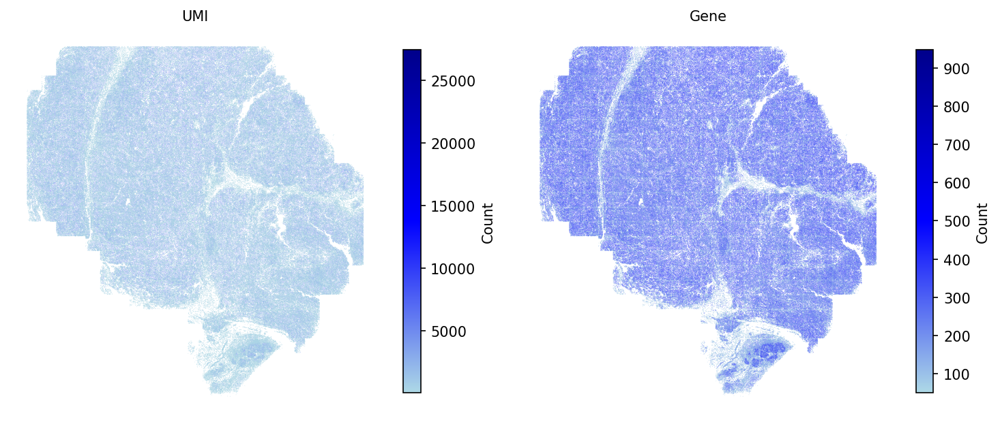
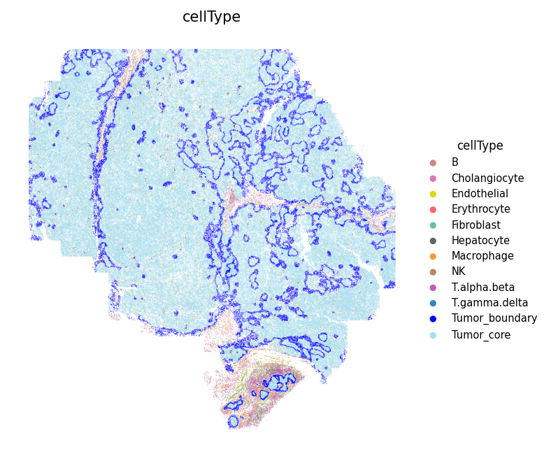
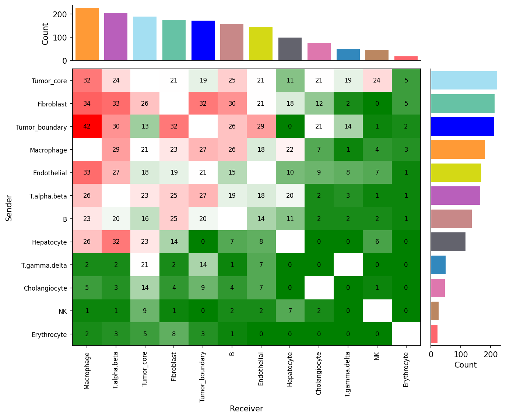
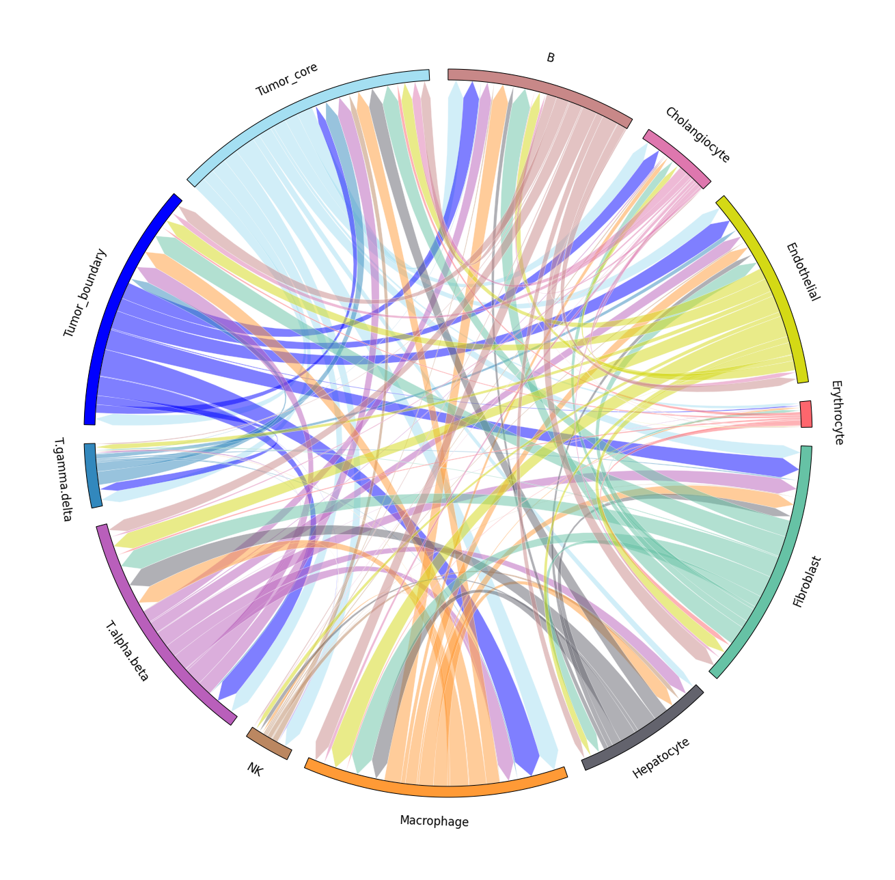
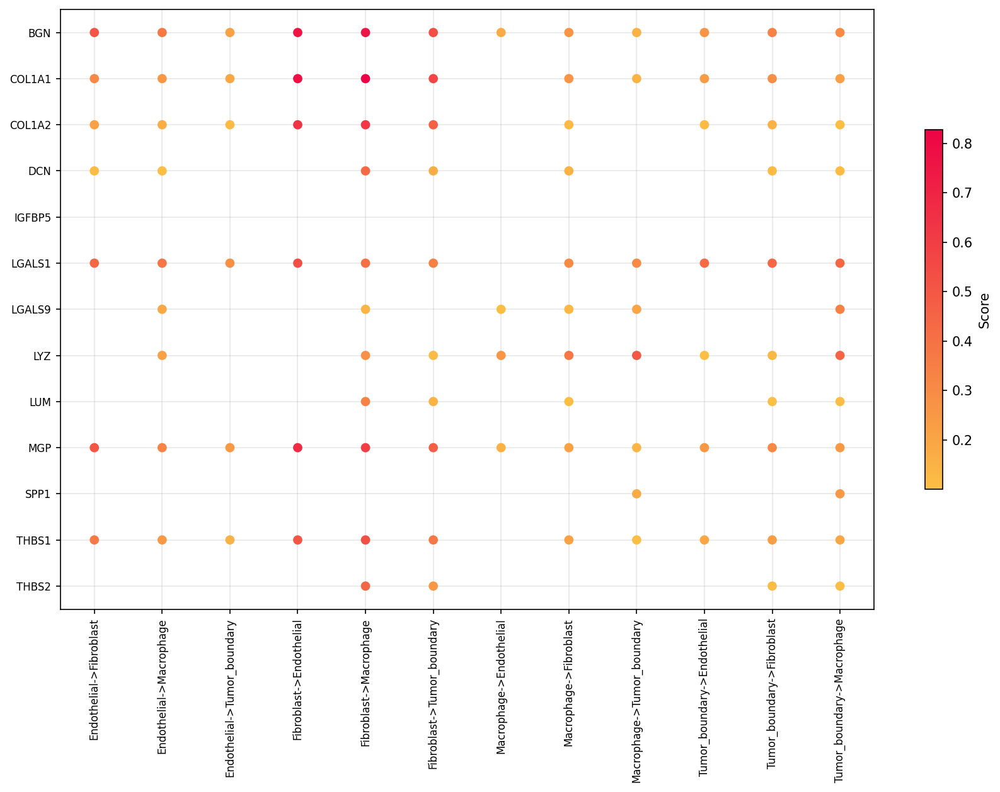
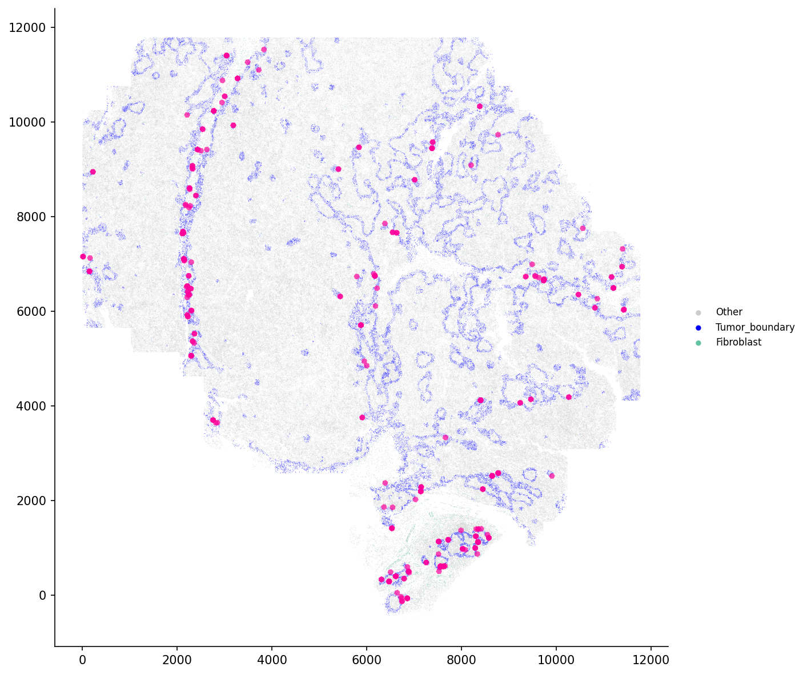
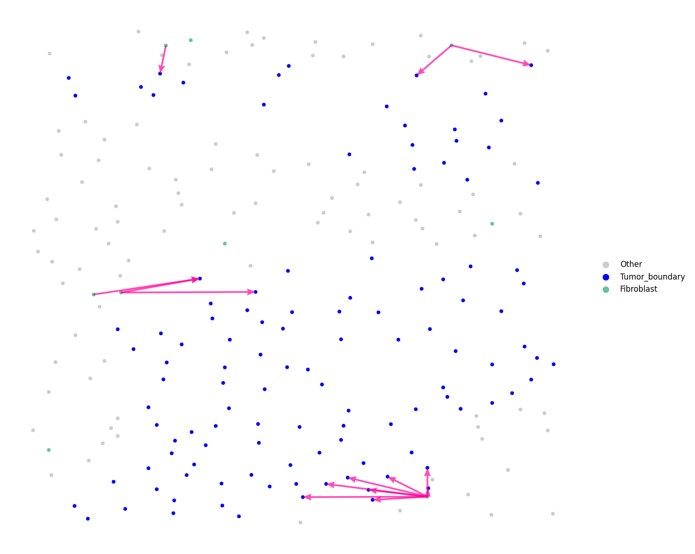

Cell-cell communication for single-cell resolution spatial transcriptomics data
Adapted from the SecAct R tutorial using the spatial-gpu package
This tutorial demonstrates inference of cell-cell communication mediated by secreted proteins from single-cell resolution spatial transcriptomics data. The demonstration uses a liver cancer sample from the CosMx platform.
1. Read ST data to a SpaCET object
To load data, users can create a SpaCET object by preparing three types of input data:
- Count data (matrix format: genes × cell IDs)
- Spatial location information (matrix format: cell IDs × coordinates, X and Y columns)
- Meta data, optional (matrix format: cell IDs × annotations)
import spatialgpu.deconvolution as spacet import anndata as ad # Load CosMx LIHC data # Download from: https://zenodo.org/records/15006880 adata = ad.read_h5ad("data/LIHC_CosMx/LIHC_CosMx.h5ad") # Show count matrix dimensions print(adata.shape)
# Show coordinate matrix print(adata.obs[["coordinate_x_um", "coordinate_y_um"]].head())
# Show meta information print(adata.obs[["cellType", "niche"]].head())
# Filter out cells with less than 50 expressed genes adata = spacet.quality_control(adata, min_genes=50)
# Plot the QC metrics spacet.visualize_spatial_feature( adata, spatial_type="QualityControl", spatial_features=["UMI", "Gene"], point_size=0.1, )

The SpaCET object contains cell type annotations from the original study. Display the spatial distribution of all cell types:
# Define cell type colors cell_colors = { 'B': '#C88888', 'Erythrocyte': '#fe666d', 'T.alpha.beta': '#B95FBB', 'T.gamma.delta': '#3288bd', 'NK': '#bb8761', 'Hepatocyte': '#63636d', 'Cholangiocyte': '#de77ae', 'Endothelial': '#D4D915', 'Fibroblast': '#66c2a5', 'Macrophage': '#ff9a36', 'Tumor_core': '#A4DFF2', 'Tumor_boundary': 'blue', 'Other': '#cccccc', } # Show the spatial distribution of all cell types spacet.visualize_spatial_feature( adata, spatial_type="metaData", spatial_features=["cellType"], colors=cell_colors, point_size=0.1, )

2. Infer secreted protein activity
After loading ST data, users run secact_inference() to infer
signaling activities of secreted proteins for each cell. Output stored in
adata.uns['spacet']['SecAct_output']['SecretedProteinActivity']
contains four items: beta (regression coefficients), se (standard error),
zscore (beta/se), and pvalue (two-sided test p-value from permutation test).
# Infer activity; ~30 mins adata = spacet.secact_inference( adata, scale_factor=1000, ) # Show activity zscores = adata.uns['spacet']['SecAct_output']['SecretedProteinActivity']['zscore'] print(zscores.iloc[:6, :3])
3. Infer cell-cell communication
After calculating the secreted protein activity, SecAct estimates cell-cell communication mediated by secreted proteins. This module contains two steps.
First, SecAct filters >1,000 secreted proteins to identify significant ones mediating intercellular communication by calculating Spearman correlation between protein signaling activity and neighbor cells’ sum expression. P values are adjusted by Benjamini-Hochberg (BH) method as false discovery rate (FDR). Cutoffs: r > 0.05 and FDR < 0.01.
Second, for each secreted protein, SecAct statistically tests whether it mediates communication between cell types. Neighboring pairs of cells are identified where distance < 20 μm. A communicating pair requires the sender expressing the protein RNA (count > 0) and the receiver showing signaling activity (score > 0). The communication score is defined as the ratio of communicating pairs to total neighboring pairs. P-value is computed through 1,000 randomizations with cell IDs permuted within each type (Benjamini–Hochberg adjusted). Significant if ratio > 0.2 and FDR < 0.01.
# Infer CCC; ~20 mins adata = spacet.secact_spatial_ccc( adata, cell_type_col="cellType", scale_factor=1000, radius=20, ratio_cutoff=0.2, padj_cutoff=0.01, ) # Show output ccc = adata.uns['spacet']['SecAct_output']['SecretedProteinCCC'] print(ccc.head())
4. Visualize cell-cell communication
We provide two types of visualization: heatmap and circle plot. The number in the heatmap represents the count of secreted proteins from senders to receivers.
spacet.visualize_secact_heatmap( adata, row_sorted=True, column_sorted=True, colors_cell_type=cell_colors, ) spacet.visualize_secact_circle( adata, colors_cell_type=cell_colors, )


Users can select specific cell-cell communication from
adata.uns['spacet']['SecAct_output']['SecretedProteinCCC']
to visualize. The visualize_secact_dotplot() function requires
sender, secreted_protein, and receiver parameters.
cell_types = ["Tumor_boundary", "Fibroblast", "Macrophage", "Endothelial"] proteins = [ "BGN", "COL1A1", "COL1A2", "DCN", "IGFBP5", "LGALS1", "LGALS9", "LYZ", "LUM", "MGP", "SPP1", "THBS1", "THBS2", ] spacet.visualize_secact_dotplot( adata, sender=cell_types, secreted_protein=proteins, receiver=cell_types, )

5. Visualize secreted signaling velocity
Users can select specific communications from
adata.uns['spacet']['SecAct_output']['SecretedProteinCCC']
to visualize using visualize_secact_velocity_scst().
Assignment of values to sender, secreted_protein, and receiver is required.
# Compute single-cell resolution velocity vel = spacet.secact_signaling_velocity_scst( adata, sender="Fibroblast", secreted_protein="THBS2", receiver="Tumor_boundary", cell_type_col="cellType", ) # Full view spacet.visualize_secact_velocity_scst( vel, show_coordinates=True, colors=cell_colors, point_size=0.1, legend_position="right", legend_size=2, arrow_color="#ff0099", arrow_size=1.0, arrow_width=0.5, )

# Zoomed view spacet.visualize_secact_velocity_scst( vel, customized_area=[8290, 8366, 1100, 1400], show_coordinates=False, colors=cell_colors, point_size=15, legend_position="right", legend_size=3, arrow_color="#ff0099", arrow_size=0.3, arrow_width=0.5, )

For large datasets, use interactive=True to get a zoomable
plotly figure instead of a static image:
# Interactive zoomable view (plotly) fig = spacet.visualize_secact_velocity_scst( vel, interactive=True, colors=cell_colors, point_size=2, arrow_color="#ff0099", arrow_size=3.0, arrow_width=1.5, save="velocity_interactive.html", )